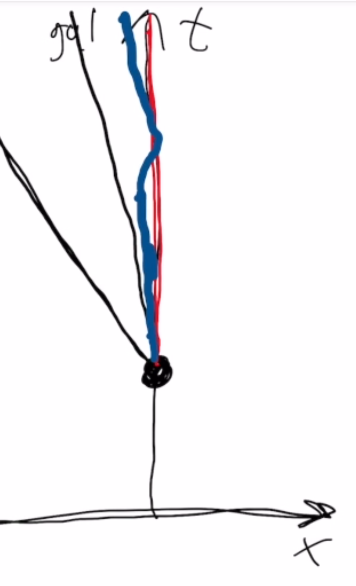

Du må bruke presentasjonsmodus/fullskjermsvisning for å lese denne, men du skal ikke bruke frem/tilbake-knappene, KUN knappene som dukker opp på sliden for å ta deg videre! Ofte må du laste filen ned til maskinen din og åpne den der for å få til dette. Merk at noen knapper vil åpne nettskjema, videoer eller andre ressurser i internettbrowseren din. Når du gjør det riktig, skal du kun se en side av gangen, og når du trykker på knappene som dukker opp på skjermen så skal disse ta deg frem/tilbake i dokumentet. Du vil miste mye læringsutbytte hvis du ser flere slides av gangen. Får du det ikke til, spør foreleser/gruppelærer!
Dette er en erstatning for forelesningen i emnet. Har du gått skikkelig gjennom disse interaktive forelesningsnotatene så trenger du ikke å lese de fulle forelesningsnotatene (med unntak av oppgavene bak). All informasjonen du trenger, får du her. Du kommer til å få mange grublespørsmål og diskusjonsoppgaver, det er meningen at disse skal gjøres i grupper av minst 2, maks 4 studenter. Det er defor sterkt anbefalt at dere sitter sammen i grupper når dere går gjennom disse interaktive forelesningsnotatene, du vil få betydelig mer utbytte av dem på den måten. En god ide kan være å bli enige om å treffes til den faste forelesningstiden og bruke forelesningslokalet som kommer til å være resevert til dette. Hvis du har kommentarer ris/ros til disse forelesningsnotatene eller til emnet, trykk på 🙂 🙁 knappen som du finner på alle sider.
HUSK at du får mer ut av de interaktive forelesningsnotatene når du gjør de sammen med noen. Diskusjonene med andre er svært viktige.
Det er mange spørsmål/grubliser underveis, sett dere selv en tidsgrense, 1-2 minutter på de korte, 4-5 minutter på de lenger. Ha en alarm ved siden av, ellers kommer dere til å bruke alt for langt tid. Har dere ikke fått det til etter 5 minutter, gå videre, se svaret og lær!
Er du i det minste tvil om noe, så finnes det nå en PADLETknapp, trykk det og still spørsmål med en gang mens du enda husker spørsmålet!
Forrige side Velkommen til forelesning 1 av 2 i del 2B! I denne første forelesningen skal vi se nærmere på fremstilling av eventer i tid og rom og avstander mellom slike i et tidromdiagram. Vi skal forsøke å forstå litt mer av hva tidromsavstanden Δs sier oss. Til slutt skal vi introdusere 4-vektorer som er 4-dimensjonale vektorer i tidrommet. Fremstillingen av spesiell relativitetsteori i AST2000 er basert på den fantastiske boken “Spacetime Physics” av E. Taylor og J. Wheeler, gratis tilgjengelig her. Anbefales på det sterkeste for den som er interessert.(Illustrasjon fra pngegg.com)Neste side
Vi sluttet videoen med denne figuren. Og med spørsmålet om hva helningen/stigningen til verdenslinjene betyr fysisk. Merk at vi definerer stigningen her som økning langs x-akse delt på endring langs y-akse. Vi ser her to rette linjer, rød og blå, som er verdenslinjene til to forskjellige observatører. Hva er forskjellig for disse observatørene? Hva betyr det at helningen til linjene deres er forskjellig? Tenk deg godt om før du går videre!
Forrige side🙂 🙁TidromdiagramPADLET Hmmmmmm...tenk igjen! Husk hvordan man omgjør et tidsintervall målt i sekunder til meter! Hvis du nå har meter for avstander i både tid og rom, hvor langt Δx beveger lys seg i løpet av en tid Δt? Si at Δx er 1 meter?
Forrige side🙂 🙁TidromdiagramPADLET
Det er helt riktig! Når vi bruker samme enheter i både tid og rom så er jo v et tall mellom 0 og 1 (gå tilbake til forrige forelesning hvis du ikke husker hvorfor, dette er svært viktig å ha kontroll over for å kunne forstå resten av denne forelesningen! Vi fant der at lyshastigheten tilsvarer v = 1. Hvis v = 1 så må dermed Δx = Δt (utifra definisjonen av v på forrige side). Det betyr at lys alltid beveger seg like langt i rom som i tid. Og da får vi en helning på 45 grader.
Forrige side🙂 🙁TidromdiagramPADLET Det ble nok galt! Prøv å trekke en linje fra event A til hver av de andre eventene. Hva slags helning er det på linja? Kan et prosjektil følge en slik verdenslinje? (lasterpistol er jo også en mulighet...) Hvis du kommer hit for andre gang, se på denne videoen
Forrige side🙂 🙁TidromdiagramPADLET
Det var riktig. Er du likevel i tvil kan du se på denne videoen
Forrige side🙂 🙁TidromdiagramPADLET
Event A og de tre andre eventene er ekesmpler på det vi kaller tidlike, lyslike og romlike eventer. Vi skal nå se på betydningen av hver av disse, en av gangen...
Tidlike eventer... ... er eventer som kan være kausalt forbundet, dvs. at det ene eventet kan ha forårsaket det andre. For at det skal være mulig så må et objekt (f.eks. et prosjektil) kunne ha beveget seg fra det ene eventet til det andre i tide for at det andre eventet skal kunne skje. Dvs. at man må kunne trekke en rett linje, som i teorien tilsvarer verdenslinjen til et objekt, fra det ene eventet til det andre som har en helning slik at hastigheten v < 1. Event A og B i eksemplet var dermed slike tidlike eventer.
Hvis linjen vi trekker fra det ene eventet til den andre er en rett linje som i teorien tilsvarer v < 1 så betyr det at x-avstanden Δx mellom eventene må være mindre enn tidsavstanden Δt (forstår du dette? Se på helningen til linja!) Dermed får vi et tidromsintervall Δs2 = Δt2 − Δx2 > 0 som er reelt, altså at Δs2 > 0 er positivt og større enn null.
Lyslike eventer... ... er eventer som kan være kausalt forbundet, dvs. at det ene eventet kan ha forårsaket det andre, men kun noe som beveger seg med lysets hastighet kan ha beveget seg fra det ene eventet og forårsaket det andre. Dvs. at man må kunne trekke en rett linje, som i teorien tilsvarer verdenslinjen til et objekt, fra det ene eventet til det andre som har en helning som tilsvarer lyshastigheten v = 1, altså en linje som danner 45∘ med x-aksen. Event A og C i eksemplet var dermed slike lyslike eventer.
Hvis linjen vi trekker fra det ene eventet til den andre er en rett linje som i teorien tilsvarer v = 1 så betyr det at x-avstanden Δx mellom eventene må være lik tidsavstanden Δt. Dermed får vi et tidromsintervall Δs2 = Δt2 − Δx2 = 0. Lys beveger seg slik at avstanden det tilbakelegger i det 4-dimensjonale tidrommet er 0.
Romlike eventer... ... er eventer som ikke kan være kausalt forbundet, dvs. at det ene eventet ikke kan ha forårsaket det andre. Hvis man dermed trekker en rett linje, som i teorien tilsvarer verdenslinjen til et objekt, fra det ene eventet til det andre, så vil denne verdenslinja tilsvare en hastighet som er større en lysets v > 1. Altså en helning med x-aksen som er mindre enn 45∘. Ingen objekter kan bevege seg fortere enn lyset og dermed finnes det heller ingen objekter som kan følge denne verdenslinja og kausalt forbinde disse to eventene. Event A og D i eksemplet var dermed slike romlike eventer.
Hvis linjen vi trekker fra det ene eventet til den andre er en rett linje som i teorien tilsvarer v > 1 så betyr det at x-avstanden Δx mellom eventene er større enn tidsavstanden Δt. Dermed får vi et tidromsintervall Δs2 = Δt2 − Δx2 < 0. Tidromsavstanden blir i dette tilfellet et imaginært tall. Det betyr at to romlike eventer ikke kan ligge på en og samme verdenslinje.
Vi er ikke helt ferdig med dette temaet enda, men jeg ble litt rastløs her, vi skal gjennom en eksempeloppgave til før neste tema, men jeg tror vi trenger litt frisk luft og en dose koffein nå! Ikke lov å fortsette før du har tatt minst 15 min. pause og en skikkelig strekk på bena!
La oss prøve oss på en del av oppgave 2B.1. Se på denne animasjonen (evt. denne hvis du har god internettforbindelse). I denne animasjonen kan de se en romstasjon samt 3 romskip. Med unntak av det grønne romskipet som akselererer, beveger de andre seg med konstant hastighet. Animasjonen viser referansesystemet til romstasjonen.
Tegn et tidromdiagram der du tegner verdenslinjer for romstasjonen og alle romskipene inn i diagrammet i tidsperioden fra starten til slutten av videoen. Merk at det kun trenger å være kvalitativt riktig, trenger ikke ikke å ha tall på aksene.
Forrige side🙂 🙁TidromdiagramPADLET
I denne videoen kan du se svaret , men du lærer absolutt ingenting av å se på den hvis du ikke har tegnet tidromdiagrammet først! Etter at du har tegnet, kan du se videoen!
En oppgave til... Du skal nå tegne tidromsdiagrammet en gang til, men nå fra referansesystemet til det røde romnskipet. Dvs. tenk deg at du er i referansesystemet til det røde romnskipet, tegn inn verdenslinjene til romstasjonen og alle 3 romskipene (inkludert ditt eget) i ditt nye referansesystem!
Forrige side🙂 🙁TidromdiagramPADLET
I denne videoen kan du se svaret , men du lærer absolutt ingenting av å se på den hvis du ikke har tegnet tidromdiagrammet først! Etter at du har tegnet, kan du se videoen!
Forrige side🙂 🙁Maksimal aldringPADLET
Vi har tidligere lært at for å finne tidromsintervallet mellom to eventer i tidrommet kan vi ta $$\Delta s=\sqrt{\Delta t^2-\Delta x^2}$$ Men hva nå hvis du vil finne tidromsavstanden som et objekt har tilbakelagt i løpet av en tiden fra t0 til t1? Anta at du kjenner hastigheten til dette objektet til enhvertid, v(t), og skal finne den totale tidromsavstanden tilbakelagt i løpet av tiden fra t0 til t1. Kan du skrive opp et integral for å finne total tidromsavstand s tilbakelagt? Ikke gå videre før du har et forslag.
Forrige side🙂 🙁Maksimal aldringPADLET
DU må gjøre et forsøk før du går videre her! Tenk deg at du har en kurve i planet som kan skrives som en funksjon f(x). Hvor lang er lengden av kurven? Hvilket integral kan du dette opp for å finne kurven fra x0 til x1 hvis du kjenner f(x)? Ikke gå videre før du har svaret.
Forrige side🙂 🙁Maksimal aldringPADLET
Men hva betyr denne tidromsavstanden s som du måler langs en verdenslinje??? Kan du huske fra del 2A en av tolkningene av tidromsavstanden Δs???
Forrige side🙂 🙁Maksimal aldringPADLET
La oss bruke det røde romskipet i forrige animasjon som eksempel. Du har tegnet verdenslinja til denne i romstasjonens referansesystem som en rød linje.
Hvis du på dette tidromdiagrammet måler eller integrerer opp tidromsavstanden s fra starten til slutten av animasjonen (tidroms-lengden av hele den røde linjen) så får du altså ut nettopp tidromsavstanden s som er den samme i alle referansesystemer.
Forrige side🙂 🙁Maksimal aldringPADLET
Det betyr at hvis du nå går til rødt romskip sitt referansesystem og ser på verdenslinja som du der tegnet for rødt romskip sett fra sitt eget referansesystem:

...så er den like lang.Tidromsavstanden s for den røde linjen her og i det foregående diagrammet er den samme siden tidromsavstanden er uavhengig av referansesystem.Men merk deg noe mer: i rødt romskip sitt referansesystem så ser vi her at linja bare går rett opp langs tidsaksen. Det betyr at tidromsavstanden s er et mål på egentida τ. Husk at egentida τ er et tidsbegrep som er bundet opp til et legeme: Egentiden er tiden målt på klokka i legemets eget referansesystem. Egentiden τ som har gått mellom to eventer er en tolkning av tidromsavstanden s. I eksemplet vårt her så snakker vi da om egentida/tidromsavstanden mellom to eventer som skjer i rødt romskip, et ved starten av animasjonen og et ved slutten.
Forrige side🙂 🙁Maksimal aldringPADLET
På eksemplet vårt med toget i del 2A så var egentiden til toget den tiden som ble målt med klokka i toget. Og denne tilsvarer altså tidromsavstanden som toget tilbakelegger, altså lengden av verdenslinja i et hvilket som helst referansesystem. Egentiden kalles ofte for armbåndsurtid siden det er tiden som måles når man setter et armbåndsur fast på objektet eller personen man skal måle egentiden til. Det som står her er det svært viktig at du får grepet på! Les en gang til gjennom de 3 siste sidene. Hvis du ikke forstår helt, ta kontakt med foreleser (eller padlet).
Forrige side🙂 🙁Maksimal aldringPADLET
Vi skal nå se på et svært viktig fysisk prinsipp, prinsippet om maksimal aldring. I generell relativitetsteori, del 2C, 2D og 2E, kommer dette prinsippet til å bli svært viktig. Følg derfor nøye med og spør nå hvis du ikke forstår! Vi begynner med en problemstilling:
Event A er at... ... vi slipper et legeme som har hastighet v og lar det bevege seg fritt uten påvirkning fra noen krefter. Legemet er i fri flyt som vi snakket om i del 2A. Hva skjer så videre med dette legemet? La oss si at legemet en tid Δt etterpå eksploderer i et event B i en posisjon Δx lenger bort langs x-aksen. Hvilken vei i tidrommet har dette legemet tatt fra eventa A til event B? Og hvordan vet vi det?
Altså, hvordan blir verdenslinja til dette legemet fra event A til event B? Og hvorfor slik? Tenk før du blar om!
Forrige side🙂 🙁Maksimal aldringPADLET
Einsteins generaliserte (og mye kraftigere) versjon av Newtons første lov, maksimal aldringsprinsippet, lyder
Prinsippet om maksimal aldring: Et legeme i fri fly følger den verdenslinja i tidrommet som gjør at det eldes mest mulig på sin vei. Det vil si at det følger den verdenslinja i tidrommet som gjør at det blir flest mulig tikk på armbåndsuret som står fast på legemet. Altså at egentida τ blir størst mulig. Men vi har lært at egentid τ og tidromsavstand s er en og samme størrelse (dette må du ha kontroll på nå!) Det betyr at legemet tar den veien i tidrommet som gjør at tidromsavstanden s blir størst mulig.
Forrige side🙂 🙁Maksimal aldringPADLET I denne videoen diskuterer vi maksimal aldringsprinsippet litt mer og forklarer detaljert hvordan det gir oss Newtons første lov. Se gjerne videoen to ganger slik at du er helt sikker på at du forstår.Synes du det er vanskelig å se for seg hvordan den rette linja kan være den lengste mulige? Den første delen av denne animasjonen kan hjele litt på forståelsen.Neste side
Forrige side🙂 🙁Maksimal aldringPADLET
Vi går et øyeblikk tilbake til eksemplet med de 3 bilene som var samlet på et sted i et event A, deretter kjørte med forskjellige hastigheter til de igjen møttes i et event B. Her ser du det igjen i tidrommet:
La oss si at det tok 10 sekunder fra A til B i bilen som kjørte med konstant hastighet. Kan du tegne inn en liten prikk på linja med konstant hastighet for hver gang klokka i denne bilen tikker? (regn med at den tikker en gang i sekundet). Tegn deretter også inn tilsvarende prikker på de andre to verdenslinjene. Trenger kun å være kvalitativt rett, altså omtrentlig riktig relativ avstand og antall prikker.
Forrige side🙂 🙁Maksimal aldringPADLET Har du tegnet tidromsdiagrammet med de 3 verdenslinjene og med prikker på? Dette likner på en av ukeoppgavene og flere eksamensoppgaver, så sjansen er stor for at du kommer til å trenge dette. Bedre å lære og forstå det nå!
Forrige side🙂 🙁Maksimal aldringPADLET
Når du har gjort et skikkelig forsøk, se på denne videoen
Hvis du vil se et konkret eksempel og litt mer detaljert tolkning av disse strekene på verdenslinja som representerer tikk på egentidsklokka, se på denne videoen .
Et legeme i fri flyt som beveger seg en romlig avstand Δx i løpet av en tid Δt fra et event A til et event B, følger den veien i tidrommet som gir størst mulig egentid, altså flest mulig tikk på armbåndsuret fra event A til event B.
Størst mulig egentid betyr størst mulig tidromsavstand s fra event A til event B.
I et 4-dimensjonalt tidrom med Lorentzgeometri, er den rette linja den lengste mulige avstanden mellom to punkt. Da følger legemet altså en rett linje i tidrommet.
Den rette linja tilsvarer konstant hastighet. Altså må legemet bevege seg fra A til B med konstant hastighet.
Dette er samme konklusjon som i Newtons 1.lov. Men i 2C skal vi se hva som skjer når vi ikke lenger har Lorentz-geometri.
Dette vasr mye abstrakt tenkning, da trenger vi litt koffein og litt adrenalin: En løpetur ut først, 3 ganger rundt fysikkbygningen så fort du kan! Ikke lov å fortsette før du har løpt alle 3 rundene!
Forrige side🙂 🙁4-vektorerPADLET Anta at vi har en 4-vektor xμ = (t,x,y,z) i et umerket referansesystem og den samme vektoren i et merket referansesystem x′μ = (t′,x′,y′,z′). Det kan være en 4-vektor som peker på et event som skjer i posisjon (t,x,y,z) i det umerkede systemet og i posisjon (t′,x′,y′,z′) i det merkede systemet. Det merkede systemet beveger seg med en hastighet vrel i forhold til det umerkede. Transformasjonen beskrives ved Lorentzmatrisen Cμν der μ og ν som vanlig er indekser over alle 4 dimensjoner, tid og rom. Kan du skrive opp Lorentztransformasjonen med Cμν som en likning med summetegn? Altså en matematisk relasjon mellom xμ og x′μ? Ikke gå videre før du har en sammenheng.
$$x_\mu'=\sum_{\nu=0}^3C_{\mu\nu}x_\nu$$ der ν er summevariabel som summes over 0 (tid) og rom (1, 2, 3)??
Einstein ble litt lei av å skrive summer slik at han innførte
Einsteins summekonvensjon. Hvis det i et produkt er to like indekser så skal det egentlig stå et summetegn der, men vi dropper å skrive det. Hvis de to like indeksene er greske, er summen over både tid og rom. Hvis indeksene er latinske er summen over kun romlige indekser.
Da kan likningen vår forenkles til xμ′ = Cμνxν der det altså egentlig er en sum over ν som vi ikke skriver.
x⃗ ⋅ y⃗ = xiyi Her skriver vi komponentene til vektorene, xi og yi med latinske indekser for å markere at de er vanlige romlige 3D-vektorer. Og siden det er produkt med to like indekser (begge er i) så er det egentlig en sum.
Forrige side🙂 🙁4-vektorerPADLET
Når vi først er igang med nye konvensjoner, så skal vi se på det 4-dimensjonale skalarproduktet i tidrommet. For å markere at man tar et skalarprodukt i tidrommet, skriver man det som en sum med Einsteinkonvensjonen, men en indeks setter man oppe og en nede: xμyμ er skalarproduktet i det 4-dimensjonale tidrommet med 4-vektorene xμ og yμ. Merk at det er samme indeks, så det er en sum, men siden det er et 4D-skalarprodukt (en indeks oppe og en nede), skal summen gjøres på følgende måte: $$x_\mu y^\mu=x_0y_0-x_iy_i=x_0y_0-\sum_{i=1}^3x_iy_i$$ der x0 og y0 er tidskomponentene til 4-vektorene mens xi og yi er de romlige vektorene. MERK deg minustegnet mellom tid- og romdelen! Det er dette som skiller skalarproduktet i 4D-tidrom fra vanlig skalarprodukt!
Forrige side🙂 🙁4-vektorerPADLET Det er også minustegnet som er årsaken til at vi skriver en indeks oppe og en nede for å markere skalarprodukt med Einsteins summekonvensjon!. Anta nå at du har to eventer A og B. 4-vektoren xμ peker på event A og 4-vektoren yμ peker på event B. Avstandensvektoren Δxμ (tilsvarende Δx⃗ i vanlig 3D-rom) mellom disse to eventene Δxμ = xμ − yμ Kan du nå skrive tidromsavstanden Δs2 mellom de to eventene uttrykt ved Δxμ?
Δs2 = ΔxμΔxμ Ser du nå hvorfor skalarproduktet i 4D-tidrom er definert med et minus mellom tid og rom? Hvis du sliter med å forstå, se om denne videoen kan hjelpe deg.
Forrige sideDu er ferdig med forelesning 1 av 2 i del 2B.. I den fysiske forelesningen rekker jeg av og til også gjennom det første temaet i neste forelesning (som omhandler regneregler for 4-vektorer) på den første fysiske forelesningen. Hvis du føler deg frisk og rask og opplagt nå, hopp gjerne over på forelesning 2 for å gå gjennom akkurat det temaet om regneregler nå (ca. 10 sider). Hvis du derimot har fått nok for idag, vent med det til du skal gå gjennom neste forelesning. Til oppsummeringen
Forrige side🙂 🙁Du er ferdig med forelesning 1 av 2 i del 2B.. Du bør nå:
vite hva en verdenslinje er og forstå hva verdenslinjas helning betyr
kunne tolke bevegelsen til et legeme fra å se på verdenslinja
vite forsjellen mellom tidlike, lyslike og romlike eventer og kunne kjenne igjen slike eventer i et tidromdiagram
vite hvordan man kan utlede et integral for å beregne veilengden av en verdenslinje i tidrommet og vite hva slags verdenslinje som er den lengste mulige mellom to eventer
kjenne prinsippet om maksimal aldring og hva det betyr
kunne utlede Newtons 1.lov fra prinsippet om maksimal aldring
vite hva en 4-vektor er og hvordan disse transformerer mellom referansesystemer
kjenne Einsteins summekonvensjon og skalarprodukt for 4-vektorer
Flott hvis du nå kan klikke på smilefjesene over og fortelle hva du synes om dette interaktive forelesningsnotatet. Hva var bra og nøyaktig hva kan forbedres? All ris og ros mottaes med takk!
 Velkommen til forelesning 1 av 2 i del 2B! I denne første forelesningen skal vi se nærmere på fremstilling av eventer i tid og rom og avstander mellom slike i et tidromdiagram. Vi skal forsøke å forstå litt mer av hva tidromsavstanden Δs sier oss. Til slutt skal vi introdusere 4-vektorer som er 4-dimensjonale vektorer i tidrommet.
Velkommen til forelesning 1 av 2 i del 2B! I denne første forelesningen skal vi se nærmere på fremstilling av eventer i tid og rom og avstander mellom slike i et tidromdiagram. Vi skal forsøke å forstå litt mer av hva tidromsavstanden Δs sier oss. Til slutt skal vi introdusere 4-vektorer som er 4-dimensjonale vektorer i tidrommet.